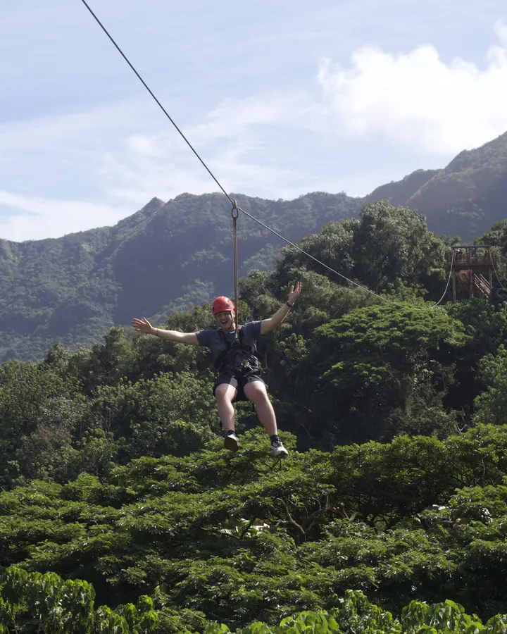
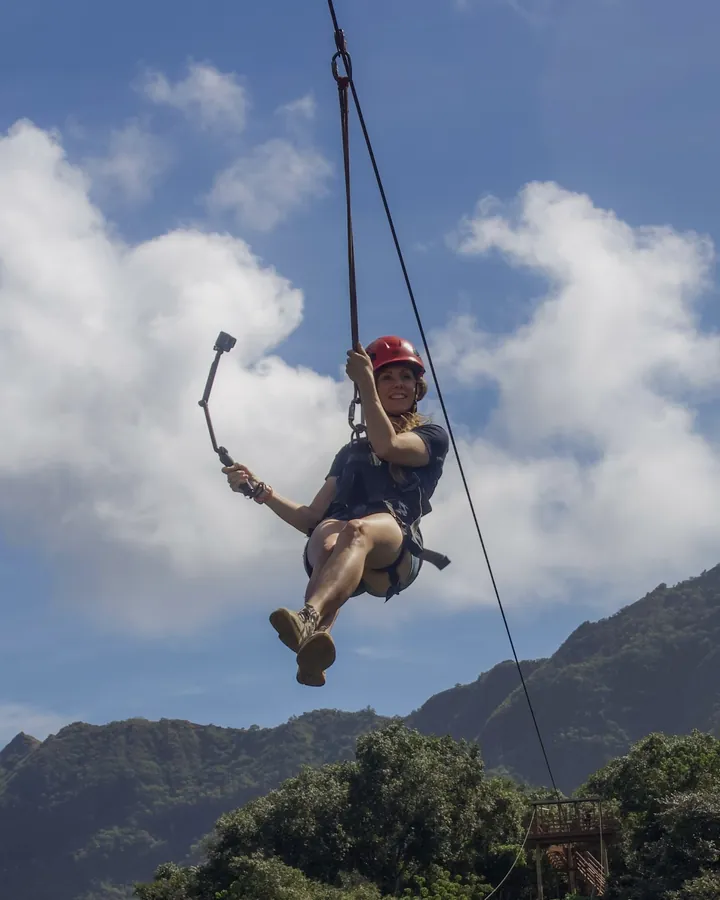
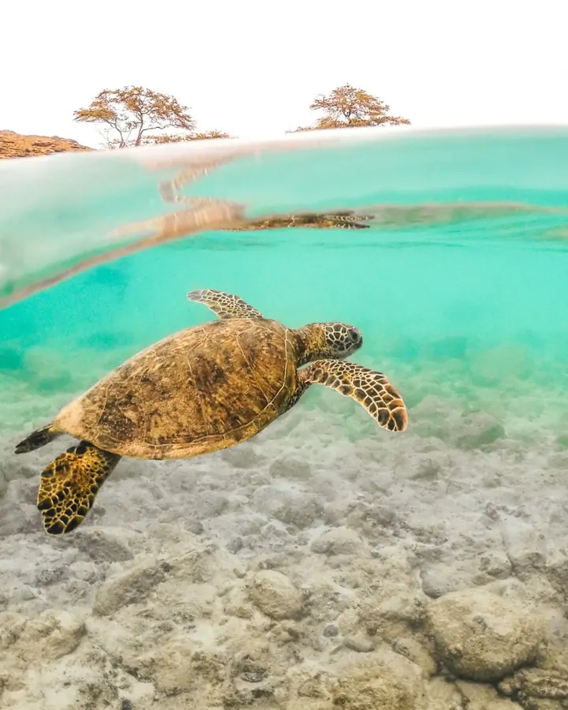

A Hawaiʻi videographer for tour operators and brands.
OutVenture Media is a video production company based on Kauaʻi that shoots across Hawaiʻi: Oʻahu, Maui, the Big Island and home. Brand films, reels and photos for tour operators, activity brands and businesses that sell a feeling, made by a crew that guided before it filmed. Not weddings.

Capt. Andy's Sailing Adventures · Outfitters Kauaʻi · Hoʻomalu Ke Kai

Brand video production, built for how people book
Most guests decide on a tour from a phone, a long way from the island. The film has to do the work the brochure used to do, and it has to do it in the first three seconds. So we write the brief, script the story and plan the shots before anyone picks up a camera, then film it on the tour itself: the boat, the trail, the water. You get a project film, reels cut for each platform and a photo set, delivered in the formats your channels need.
An adventure videographer, not a wedding videographer
Search for a Hawaiʻi videographer and you will mostly find wedding filmmakers. Good ones. That is not what we do. We film tours and activities while they are running, with paying guests on board, without getting in the way of the day. Years of guiding ziplines, kayaks and sailing catamarans taught us where the moment happens on a tour, and that is the moment we are there for.


One crew, every island
Kauaʻi is home base and the Nā Pali Coast is the backyard. We fly to Oʻahu, Maui and the Big Island with the same crew and the same process, and we travel beyond Hawaiʻi for the right story. Permits, weather windows and the light on each coast are planned in the brief, not discovered on the day.
Where we shoot
Four islands, one process. Pick yours.
Home base. Nā Pali by boat and by air, the Wailua River, Poʻipū, Hanalei Bay and the red dirt of Waimea Canyon. Our Kauaʻi videographer page
Waikīkī catamarans, North Shore surf schools, Kailua kayak and paddle tours, Honolulu boat charters and dive operators. A short flight and we are on the dock before the first tour. Ask about an Oʻahu shoot
Molokini snorkel boats, Māʻalaea and Kāʻanapali sailing, Road to Hāna guides, upcountry ziplines and Haleakalā sunrise tours. Ask about a Maui shoot
Kona manta dives, sailing and fishing charters, volcano tours, Hilo waterfalls and Kohala ziplines. Ask about a Big Island shoot
Three ways to work together.
Start here
Half-day shoot
We join one of your tours or activities and capture what happens, with no heavy staging. What is included
The core offer
Single-day shoot
One planned day with a small, elite crew and a small cast, built on a brief, script and shot list. What is included
For larger stories
Multi-day production
Multiple days and locations with a full crew and cast, planned end to end. What is included


From the journal
How to hire a videographer in Hawaiʻi for your tour company
What to ask a Hawaiʻi videographer before you book a shoot, why wedding filmmakers are the wrong fit for a tour, and what a good brief looks like.
What brand video production costs for a tour operator
The four things that move the price of a brand video shoot for a tour or activity business, and how to brief one so the money goes into footage, not waiting around.
Questions operators ask
Do you shoot weddings or events?
No. We shoot for tour operators, activity brands and businesses: commercial and brand video, reels and photography. Hawaiʻi has excellent wedding filmmakers, and we are happy to point you to them.
How much does a videographer cost in Hawaiʻi?
Every production is quoted from a brief, because a half-day on a catamaran and a multi-day story across two islands are not the same job. Tell us what you run and what you want to make, and we will send a quote. Half-day shoots are the simplest place to start.
Do you travel to other islands or outside Hawaiʻi?
Yes. We are based on Kauaʻi, we shoot across the Hawaiian islands, and we travel for the right story.
What do we get at the end of a shoot?
A project film, reels cut for each platform and a photo set, in the formats your channels need. Deliverables are listed on each offer and written into the agreement before we shoot.
Who owns the footage, and where can I use it?
Ownership and usage are stated in each offer and written into the agreement before we shoot. Talent releases are handled for anyone who appears in the work.
Can you fly a drone?
Aerial footage is part of many of our shoots where the location and the rules allow it. We handle the planning for it in the brief.
Tell us about your operation.
Share what you run and what you want guests to feel. We'll tell you how we would film it.
No pitch decks. A conversation about your operation first.